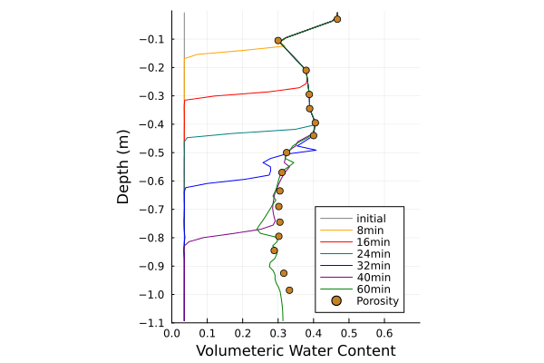

<!DOCTYPE html>
<html lang="en"><head><meta charset="UTF-8"/><meta name="viewport" content="width=device-width, initial-scale=1.0"/><title>Layered Soil · ClimaLand.jl</title><meta name="title" content="Layered Soil · ClimaLand.jl"/><meta property="og:title" content="Layered Soil · ClimaLand.jl"/><meta property="twitter:title" content="Layered Soil · ClimaLand.jl"/><meta name="description" content="Documentation for ClimaLand.jl."/><meta property="og:description" content="Documentation for ClimaLand.jl."/><meta property="twitter:description" content="Documentation for ClimaLand.jl."/><script data-outdated-warner src="../../../../assets/warner.js"></script><link href="https://cdnjs.cloudflare.com/ajax/libs/lato-font/3.0.0/css/lato-font.min.css" rel="stylesheet" type="text/css"/><link href="https://cdnjs.cloudflare.com/ajax/libs/juliamono/0.050/juliamono.min.css" rel="stylesheet" type="text/css"/><link href="https://cdnjs.cloudflare.com/ajax/libs/font-awesome/6.4.2/css/fontawesome.min.css" rel="stylesheet" type="text/css"/><link href="https://cdnjs.cloudflare.com/ajax/libs/font-awesome/6.4.2/css/solid.min.css" rel="stylesheet" type="text/css"/><link href="https://cdnjs.cloudflare.com/ajax/libs/font-awesome/6.4.2/css/brands.min.css" rel="stylesheet" type="text/css"/><link href="https://cdnjs.cloudflare.com/ajax/libs/KaTeX/0.16.8/katex.min.css" rel="stylesheet" type="text/css"/><script>documenterBaseURL="../../../.."</script><script src="https://cdnjs.cloudflare.com/ajax/libs/require.js/2.3.6/require.min.js" data-main="../../../../assets/documenter.js"></script><script src="../../../../search_index.js"></script><script src="../../../../siteinfo.js"></script><script src="../../../../../versions.js"></script><link class="docs-theme-link" rel="stylesheet" type="text/css" href="../../../../assets/themes/catppuccin-mocha.css" data-theme-name="catppuccin-mocha"/><link class="docs-theme-link" rel="stylesheet" type="text/css" href="../../../../assets/themes/catppuccin-macchiato.css" data-theme-name="catppuccin-macchiato"/><link class="docs-theme-link" rel="stylesheet" type="text/css" href="../../../../assets/themes/catppuccin-frappe.css" data-theme-name="catppuccin-frappe"/><link class="docs-theme-link" rel="stylesheet" type="text/css" href="../../../../assets/themes/catppuccin-latte.css" data-theme-name="catppuccin-latte"/><link class="docs-theme-link" rel="stylesheet" type="text/css" href="../../../../assets/themes/documenter-dark.css" data-theme-name="documenter-dark" data-theme-primary-dark/><link class="docs-theme-link" rel="stylesheet" type="text/css" href="../../../../assets/themes/documenter-light.css" data-theme-name="documenter-light" data-theme-primary/><script src="../../../../assets/themeswap.js"></script></head><body><div id="documenter"><nav class="docs-sidebar"><a class="docs-logo" href="../../../../"></a><div class="docs-package-name"><span class="docs-autofit"><a href="../../../../">ClimaLand.jl</a></span></div><button class="docs-search-query input is-rounded is-small is-clickable my-2 mx-auto py-1 px-2" id="documenter-search-query">Search docs (Ctrl + /)</button><ul class="docs-menu"><li><a class="tocitem" href="../../../../">Home</a></li><li><a class="tocitem" href="../../../../getting_started/">Getting Started</a></li><li><input class="collapse-toggle" id="menuitem-3" type="checkbox" checked/><label class="tocitem" for="menuitem-3"><span class="docs-label">Tutorials</span><i class="docs-chevron"></i></label><ul class="collapsed"><li><input class="collapse-toggle" id="menuitem-3-1" type="checkbox"/><label class="tocitem" for="menuitem-3-1"><span class="docs-label">Running land simulations</span><i class="docs-chevron"></i></label><ul class="collapsed"><li><input class="collapse-toggle" id="menuitem-3-1-1" type="checkbox"/><label class="tocitem" for="menuitem-3-1-1"><span class="docs-label">Bucket LSM</span><i class="docs-chevron"></i></label><ul class="collapsed"><li><a class="tocitem" href="../../Bucket/bucket_tutorial/">Introduction to the Land Bucket Model</a></li><li><a class="tocitem" href="../../Bucket/coupled_bucket/">Setting up a Coupled Simulation</a></li></ul></li><li><input class="collapse-toggle" id="menuitem-3-1-2" type="checkbox"/><label class="tocitem" for="menuitem-3-1-2"><span class="docs-label">Integrated soil+canopy modeling</span><i class="docs-chevron"></i></label><ul class="collapsed"><li><a class="tocitem" href="../../../integrated/soil_canopy_tutorial/">Coupled Canopy and Soil</a></li></ul></li><li><input class="collapse-toggle" id="menuitem-3-1-3" type="checkbox"/><label class="tocitem" for="menuitem-3-1-3"><span class="docs-label">Handling interactions between model components</span><i class="docs-chevron"></i></label><ul class="collapsed"><li><a class="tocitem" href="../../../integrated/handling_soil_fluxes/">Adjusting boundary conditions for the soil</a></li><li><a class="tocitem" href="../../../integrated/handling_snow_fluxes/">Adjusting boundary conditions for the snow</a></li></ul></li></ul></li><li><input class="collapse-toggle" id="menuitem-3-2" type="checkbox" checked/><label class="tocitem" for="menuitem-3-2"><span class="docs-label">Running standalone component simulations</span><i class="docs-chevron"></i></label><ul class="collapsed"><li><input class="collapse-toggle" id="menuitem-3-2-1" type="checkbox" checked/><label class="tocitem" for="menuitem-3-2-1"><span class="docs-label">Soil modeling</span><i class="docs-chevron"></i></label><ul class="collapsed"><li><a class="tocitem" href="../boundary_conditions/">Boundary conditions</a></li><li><a class="tocitem" href="../richards_equation/">Richards Equation</a></li><li><a class="tocitem" href="../soil_energy_hydrology/">Energy and Hydrology</a></li><li><a class="tocitem" href="../freezing_front/">Phase Changes</a></li><li class="is-active"><a class="tocitem" href>Layered Soil</a></li><li><a class="tocitem" href="../evaporation/">Coarse Sand Evaporation</a></li><li><a class="tocitem" href="../evaporation_gilat_loess/">Gilat Loess Evaporation</a></li><li><a class="tocitem" href="../sublimation/">Bare soil site</a></li></ul></li><li><input class="collapse-toggle" id="menuitem-3-2-2" type="checkbox"/><label class="tocitem" for="menuitem-3-2-2"><span class="docs-label">Canopy modeling</span><i class="docs-chevron"></i></label><ul class="collapsed"><li><a class="tocitem" href="../../Canopy/canopy_tutorial/">Standalone Canopy</a></li></ul></li><li><input class="collapse-toggle" id="menuitem-3-2-3" type="checkbox"/><label class="tocitem" for="menuitem-3-2-3"><span class="docs-label">Snow Modeling</span><i class="docs-chevron"></i></label><ul class="collapsed"><li><a class="tocitem" href="../../Snow/base_tutorial/">Seasonal Snow Timeseries Generation with a Neural Network</a></li><li><a class="tocitem" href="../../Snow/data_tutorial/">Scraping SNOTEL Data</a></li></ul></li></ul></li><li><input class="collapse-toggle" id="menuitem-3-3" type="checkbox"/><label class="tocitem" for="menuitem-3-3"><span class="docs-label">Calibrating your ClimaLand model</span><i class="docs-chevron"></i></label><ul class="collapsed"><li><a class="tocitem" href="../../../calibration/minimal_working_example/">Single site perfect model</a></li><li><a class="tocitem" href="../../../calibration/minimal_working_example_obs/">Single site observations</a></li></ul></li><li><input class="collapse-toggle" id="menuitem-3-4" type="checkbox"/><label class="tocitem" for="menuitem-3-4"><span class="docs-label">For model developers</span><i class="docs-chevron"></i></label><ul class="collapsed"><li><a class="tocitem" href="../../Usage/model_tutorial/">Intro to standalone models</a></li><li><a class="tocitem" href="../../Usage/LSM_single_column_tutorial/">Intro to multi-component models</a></li><li><a class="tocitem" href="../../Usage/domain_tutorial/">Intro to ClimaLand Domains</a></li><li><a class="tocitem" href="../../../shared_utilities/driver_tutorial/">Intro to forced site-level runs</a></li></ul></li></ul></li><li><input class="collapse-toggle" id="menuitem-4" type="checkbox"/><label class="tocitem" for="menuitem-4"><span class="docs-label">Standalone models</span><i class="docs-chevron"></i></label><ul class="collapsed"><li><input class="collapse-toggle" id="menuitem-4-1" type="checkbox"/><label class="tocitem" for="menuitem-4-1"><span class="docs-label">Vegetation</span><i class="docs-chevron"></i></label><ul class="collapsed"><li><input class="collapse-toggle" id="menuitem-4-1-1" type="checkbox"/><label class="tocitem" for="menuitem-4-1-1"><span class="docs-label">Radiative transfer</span><i class="docs-chevron"></i></label><ul class="collapsed"><li><a class="tocitem" href="../../../../standalone/pages/vegetation/radiative_transfer/beer_model/">Beer model</a></li><li><a class="tocitem" href="../../../../standalone/pages/vegetation/radiative_transfer/twostream_model/">Two-Stream model</a></li></ul></li><li><input class="collapse-toggle" id="menuitem-4-1-2" type="checkbox"/><label class="tocitem" for="menuitem-4-1-2"><span class="docs-label">Photosynthesis</span><i class="docs-chevron"></i></label><ul class="collapsed"><li><a class="tocitem" href="../../../../standalone/pages/vegetation/photosynthesis/farquhar_model/">Farquhar model</a></li><li><a class="tocitem" href="../../../../standalone/pages/vegetation/photosynthesis/optimality_model/">Optimality model</a></li></ul></li><li><input class="collapse-toggle" id="menuitem-4-1-3" type="checkbox"/><label class="tocitem" for="menuitem-4-1-3"><span class="docs-label">Stomatal conductance</span><i class="docs-chevron"></i></label><ul class="collapsed"><li><a class="tocitem" href="../../../../standalone/pages/vegetation/stomatal_conductance/medlyn_model/">Medlyn model</a></li></ul></li><li><input class="collapse-toggle" id="menuitem-4-1-4" type="checkbox"/><label class="tocitem" for="menuitem-4-1-4"><span class="docs-label">Plant hydraulics</span><i class="docs-chevron"></i></label><ul class="collapsed"><li><a class="tocitem" href="../../../../standalone/pages/vegetation/plant_hydraulics/van_genuchten_model/">Van Genuchten model</a></li></ul></li></ul></li><li><input class="collapse-toggle" id="menuitem-4-2" type="checkbox"/><label class="tocitem" for="menuitem-4-2"><span class="docs-label">Soil</span><i class="docs-chevron"></i></label><ul class="collapsed"><li><input class="collapse-toggle" id="menuitem-4-2-1" type="checkbox"/><label class="tocitem" for="menuitem-4-2-1"><span class="docs-label">Biogeochemistry</span><i class="docs-chevron"></i></label><ul class="collapsed"><li><a class="tocitem" href="../../../../standalone/pages/soil/biogeochemistry/DAMM_model/">DAMM model</a></li></ul></li><li><input class="collapse-toggle" id="menuitem-4-2-2" type="checkbox"/><label class="tocitem" for="menuitem-4-2-2"><span class="docs-label">Hydrology</span><i class="docs-chevron"></i></label><ul class="collapsed"><li><a class="tocitem" href="../../../../standalone/pages/soil/hydrology/richards_model/">Richards model</a></li></ul></li><li><input class="collapse-toggle" id="menuitem-4-2-3" type="checkbox"/><label class="tocitem" for="menuitem-4-2-3"><span class="docs-label">Energy</span><i class="docs-chevron"></i></label><ul class="collapsed"><li><a class="tocitem" href="../../../../standalone/pages/soil/energy/energy_model/">Energy model</a></li></ul></li></ul></li><li><input class="collapse-toggle" id="menuitem-4-3" type="checkbox"/><label class="tocitem" for="menuitem-4-3"><span class="docs-label">Snow</span><i class="docs-chevron"></i></label><ul class="collapsed"><li><a class="tocitem" href="../../../../standalone/pages/snow/snow_model/">Snow model</a></li></ul></li><li><input class="collapse-toggle" id="menuitem-4-4" type="checkbox"/><label class="tocitem" for="menuitem-4-4"><span class="docs-label">SurfaceWater</span><i class="docs-chevron"></i></label><ul class="collapsed"><li><a class="tocitem" href="../../../../standalone/pages/surface_water/surface_water_model/">Surface water model</a></li></ul></li></ul></li><li><input class="collapse-toggle" id="menuitem-5" type="checkbox"/><label class="tocitem" for="menuitem-5"><span class="docs-label">Diagnostics</span><i class="docs-chevron"></i></label><ul class="collapsed"><li><a class="tocitem" href="../../../../diagnostics/users_diagnostics/">For users</a></li><li><a class="tocitem" href="../../../../diagnostics/developers_diagnostics/">For developers</a></li><li><a class="tocitem" href="../../../../diagnostics/available_diagnostics/">Available diagnostics</a></li></ul></li><li><a class="tocitem" href="../../../../Contributing/">Contribution guide</a></li><li><a class="tocitem" href="../../../../folderstructure/">Repository structure</a></li><li><input class="collapse-toggle" id="menuitem-8" type="checkbox"/><label class="tocitem" for="menuitem-8"><span class="docs-label">APIs</span><i class="docs-chevron"></i></label><ul class="collapsed"><li><input class="collapse-toggle" id="menuitem-8-1" type="checkbox"/><label class="tocitem" for="menuitem-8-1"><span class="docs-label">ClimaLand</span><i class="docs-chevron"></i></label><ul class="collapsed"><li><a class="tocitem" href="../../../../APIs/ClimaLand/">ClimaLand</a></li><li><a class="tocitem" href="../../../../APIs/Regridder/">Parameter Dataset Tools</a></li><li><a class="tocitem" href="../../../../APIs/shared_utilities/">Shared Utilities</a></li><li><input class="collapse-toggle" id="menuitem-8-1-4" type="checkbox"/><label class="tocitem" for="menuitem-8-1-4"><span class="docs-label">Soil</span><i class="docs-chevron"></i></label><ul class="collapsed"><li><a class="tocitem" href="../../../../APIs/Soil/">Soil Energy and Hydrology</a></li><li><a class="tocitem" href="../../../../APIs/SoilBiogeochemistry/">Soil Biogeochemistry</a></li></ul></li><li><input class="collapse-toggle" id="menuitem-8-1-5" type="checkbox"/><label class="tocitem" for="menuitem-8-1-5"><span class="docs-label">Canopy</span><i class="docs-chevron"></i></label><ul class="collapsed"><li><a class="tocitem" href="../../../../APIs/canopy/Canopy/">Canopy Models</a></li><li><a class="tocitem" href="../../../../APIs/canopy/PlantHydraulics/">Plant Hydraulics</a></li><li><a class="tocitem" href="../../../../APIs/canopy/Photosynthesis/">Canopy Photosynthesis</a></li><li><a class="tocitem" href="../../../../APIs/canopy/RadiativeTransfer/">Canopy RT</a></li><li><a class="tocitem" href="../../../../APIs/canopy/CanopyEnergy/">Canopy Energy</a></li><li><a class="tocitem" href="../../../../APIs/canopy/StomatalConductance/">Canopy Stomatal Conductance</a></li><li><a class="tocitem" href="../../../../APIs/canopy/AutotrophicRespiration/">Canopy Autotrophic Respiration</a></li></ul></li><li><a class="tocitem" href="../../../../APIs/SurfaceWater/">Surface Water Models</a></li><li><a class="tocitem" href="../../../../APIs/Bucket/">Bucket Model</a></li><li><a class="tocitem" href="../../../../APIs/Snow/">Snow Model</a></li></ul></li></ul></li></ul><div class="docs-version-selector field has-addons"><div class="control"><span class="docs-label button is-static is-size-7">Version</span></div><div class="docs-selector control is-expanded"><div class="select is-fullwidth is-size-7"><select id="documenter-version-selector"></select></div></div></div></nav><div class="docs-main"><header class="docs-navbar"><a class="docs-sidebar-button docs-navbar-link fa-solid fa-bars is-hidden-desktop" id="documenter-sidebar-button" href="#"></a><nav class="breadcrumb"><ul class="is-hidden-mobile"><li><a class="is-disabled">Tutorials</a></li><li><a class="is-disabled">Running standalone component simulations</a></li><li><a class="is-disabled">Soil modeling</a></li><li class="is-active"><a href>Layered Soil</a></li></ul><ul class="is-hidden-tablet"><li class="is-active"><a href>Layered Soil</a></li></ul></nav><div class="docs-right"><a class="docs-navbar-link" href="https://github.com/CliMA/ClimaLand.jl" title="View the repository on GitHub"><span class="docs-icon fa-brands"></span><span class="docs-label is-hidden-touch">GitHub</span></a><a class="docs-navbar-link" href="https://github.com/CliMA/ClimaLand.jl/../../../../.." title="View source on GitHub"><span class="docs-icon fa-solid"></span></a><a class="docs-settings-button docs-navbar-link fa-solid fa-gear" id="documenter-settings-button" href="#" title="Settings"></a><a class="docs-article-toggle-button fa-solid fa-chevron-up" id="documenter-article-toggle-button" href="javascript:;" title="Collapse all docstrings"></a></div></header><article class="content" id="documenter-page"><p>This shows how to run single column soil model, in standalone mode with spatially varying properties. We are mimicking the experiment carried out in Huang et. al. Can. J. Soil Sci. (2011) 91: 169183 doi:10.4141/CJSS09118, which measured the infiltration of layered soil in Fort McMurray, Alberta, Canada. We thank Mingbin Huang and S. Lee Barbour for correspondence and support, including sharing of data, with us. Note that all data used in this tutorial is available in their publication.</p><pre><code class="language-julia hljs">using Plots
import ClimaUtilities.SpaceVaryingInputs: SpaceVaryingInput
import SciMLBase
import ClimaTimeSteppers as CTS
using ClimaCore
import ClimaParams as CP
using DelimitedFiles: readdlm

using ClimaLand
using ClimaLand.Domains: Column
using ClimaLand.Soil
import ClimaLand
FT = Float64;</code></pre><p>Define simulation times</p><pre><code class="language-julia hljs">t0 = Float64(0)
tf = Float64(60 * 60)
dt = Float64(30);</code></pre><p>Define the domain</p><pre><code class="language-julia hljs">zmax = FT(0)
zmin = FT(-1.1)
nelems = 75
Δ = FT((zmax - zmin) / nelems / 2)
soil_domain = Column(; zlim = (zmin, zmax), nelements = nelems);</code></pre><p>Download the parameter data. This has been obtained from Table 1b of Infiltration and drainage processes in multi-layered coarse soils Mingbin Huang et. al. Can. J. Soil Sci. (2011) 91: 169183 doi:10.4141/CJSS09118</p><pre><code class="language-julia hljs">data_file = ClimaLand.Artifacts.huang_et_al2011_soil_van_genuchten_data();
parameter_data = readdlm(data_file, &#39;,&#39;);</code></pre><p>Our model treats z as increasing in the upwards direction. Values below the surface are negative. Because of this, we convert the (positive-valued) depth of the data into a monotonically increasing z coordinate value. using a negative sign and the reverse function.</p><pre><code class="language-julia hljs">depth = reverse(-parameter_data[1, :] .* 0.01) # convert to m
ksat = reverse(parameter_data[6, :] .* 1 / 100.0 / 60.0) # convert cm/min to m/s
vgα = reverse(parameter_data[4, :] .* 100 * 2) # they report αᵈ; αʷ = 2αᵈ. This experiment is for infiltration (wetting).
vgn = reverse(parameter_data[5, :])
residual_frac = reverse(parameter_data[2, :])
porosity = reverse(parameter_data[3, :]);</code></pre><p>Create fields corresponding to the parameter</p><pre><code class="language-julia hljs">ν = SpaceVaryingInput(depth, porosity, soil_domain.space.subsurface)
K_sat = SpaceVaryingInput(depth, ksat, soil_domain.space.subsurface)
θ_r = SpaceVaryingInput(depth, residual_frac, soil_domain.space.subsurface);</code></pre><p>The specific storativity is not something we have data on, so we approximate it as being constant in depth, and create the parameter field directly:</p><pre><code class="language-julia hljs">S_s = ClimaCore.Fields.zeros(soil_domain.space.subsurface) .+ 1e-3;</code></pre><p>The retention model is a vanGenuchten model with α and n as a function of depth, read from the data:</p><pre><code class="language-julia hljs">hcm = SpaceVaryingInput(
    depth,
    (; α = vgα, n = vgn),
    soil_domain.space.subsurface,
    vanGenuchten{FT},
);</code></pre><p>The parameter struct:</p><pre><code class="language-julia hljs">params = ClimaLand.Soil.RichardsParameters(;
    ν = ν,
    hydrology_cm = hcm,
    K_sat = K_sat,
    S_s = S_s,
    θ_r = θ_r,
);</code></pre><p>From here on out, everything should look familiar if you&#39;ve already gone through the other soil tutorials. Set Boundary conditions: At the top, we use the observed value of Ksat at the top of the domain. Setting the flux to be -Ksat is approximating the top as saturated.</p><pre><code class="language-julia hljs">function top_flux_function(p, t)
    return -0.0001033
end
top_bc = ClimaLand.Soil.WaterFluxBC(top_flux_function)
bottom_bc = ClimaLand.Soil.FreeDrainage()
boundary_fluxes = (; top = top_bc, bottom = bottom_bc)
soil = Soil.RichardsModel{FT}(;
    parameters = params,
    domain = soil_domain,
    boundary_conditions = boundary_fluxes,
    sources = (),
);</code></pre><p>Initial the state vectors, and set initial conditions</p><pre><code class="language-julia hljs">Y, p, cds = initialize(soil);</code></pre><p>Initial conditions</p><pre><code class="language-julia hljs">Y.soil.ϑ_l .= 0.0353; # read from Figure 4 of Huang et al.</code></pre><p>We also set the initial conditions of the auxiliary state here:</p><pre><code class="language-julia hljs">set_initial_cache! = make_set_initial_cache(soil)
set_initial_cache!(p, Y, t0);</code></pre><p>Timestepping:</p><pre><code class="language-julia hljs">stepper = CTS.ARS111()
@assert FT in (Float32, Float64)
err = (FT == Float64) ? 1e-8 : 1e-4
convergence_cond = CTS.MaximumError(err)
conv_checker = CTS.ConvergenceChecker(norm_condition = convergence_cond)
ode_algo = CTS.IMEXAlgorithm(
    stepper,
    CTS.NewtonsMethod(
        max_iters = 10,
        update_j = CTS.UpdateEvery(CTS.NewNewtonIteration),
        convergence_checker = conv_checker,
    ),
)
exp_tendency! = make_exp_tendency(soil)
imp_tendency! = make_imp_tendency(soil)
jacobian! = make_jacobian(soil)

jac_kwargs = (; jac_prototype = ImplicitEquationJacobian(Y), Wfact = jacobian!)
prob = SciMLBase.ODEProblem(
    CTS.ClimaODEFunction(
        T_exp! = exp_tendency!,
        T_imp! = SciMLBase.ODEFunction(imp_tendency!; jac_kwargs...),
        dss! = ClimaLand.dss!,
    ),
    Y,
    (t0, tf),
    p,
)
saveat = [0.0, 8.0, 16.0, 24.0, 32.0, 40.0, 60.0] .* 60 # chosen to compare with data in plots in paper
sol = SciMLBase.solve(prob, ode_algo; dt = dt, saveat = saveat);

z = parent(ClimaCore.Fields.coordinate_field(soil_domain.space.subsurface).z)
ϑ_l = [parent(sol.u[k].soil.ϑ_l) for k in 1:length(sol.t)]
plot(ϑ_l[1], z, label = &quot;initial&quot;, color = &quot;grey&quot;, aspect_ratio = 0.8)
plot!(ϑ_l[2], z, label = &quot;8min&quot;, color = &quot;orange&quot;)
plot!(ϑ_l[3], z, label = &quot;16min&quot;, color = &quot;red&quot;)
plot!(ϑ_l[4], z, label = &quot;24min&quot;, color = &quot;teal&quot;)
plot!(ϑ_l[5], z, label = &quot;32min&quot;, color = &quot;blue&quot;)
plot!(ϑ_l[6], z, label = &quot;40min&quot;, color = &quot;purple&quot;)
plot!(ϑ_l[7], z, label = &quot;60min&quot;, color = &quot;green&quot;)
scatter!(porosity, depth, label = &quot;Porosity&quot;)
plot!(legend = :bottomright)

plot!(xlim = [0, 0.7])

plot!(
    ylim = [-1.1, 0],
    yticks = [-1.1, -1, -0.9, -0.8, -0.7, -0.6, -0.5, -0.4, -0.3, -0.2, -0.1],
)

plot!(ylabel = &quot;Depth (m)&quot;)

plot!(xlabel = &quot;Volumeteric Water Content&quot;)

savefig(&quot;./sv62_alpha_2_inf_updated_data_climaland.png&quot;)</code></pre><pre><code class="nohighlight hljs">&quot;/home/runner/work/ClimaLand.jl/ClimaLand.jl/docs/src/generated/standalone/Soil/sv62_alpha_2_inf_updated_data_climaland.png&quot;</code></pre><p></p><hr/><p><em>This page was generated using <a href="https://github.com/fredrikekre/Literate.jl">Literate.jl</a>.</em></p></article><nav class="docs-footer"><a class="docs-footer-prevpage" href="../freezing_front/">« Phase Changes</a><a class="docs-footer-nextpage" href="../evaporation/">Coarse Sand Evaporation »</a><div class="flexbox-break"></div><p class="footer-message">Powered by <a href="https://github.com/JuliaDocs/Documenter.jl">Documenter.jl</a> and the <a href="https://julialang.org/">Julia Programming Language</a>.</p></nav></div><div class="modal" id="documenter-settings"><div class="modal-background"></div><div class="modal-card"><header class="modal-card-head"><p class="modal-card-title">Settings</p><button class="delete"></button></header><section class="modal-card-body"><p><label class="label">Theme</label><div class="select"><select id="documenter-themepicker"><option value="auto">Automatic (OS)</option><option value="documenter-light">documenter-light</option><option value="documenter-dark">documenter-dark</option><option value="catppuccin-latte">catppuccin-latte</option><option value="catppuccin-frappe">catppuccin-frappe</option><option value="catppuccin-macchiato">catppuccin-macchiato</option><option value="catppuccin-mocha">catppuccin-mocha</option></select></div></p><hr/><p>This document was generated with <a href="https://github.com/JuliaDocs/Documenter.jl">Documenter.jl</a> version 1.7.0 on <span class="colophon-date" title="Saturday 19 October 2024 01:01">Saturday 19 October 2024</span>. Using Julia version 1.11.1.</p></section><footer class="modal-card-foot"></footer></div></div></div></body></html>
